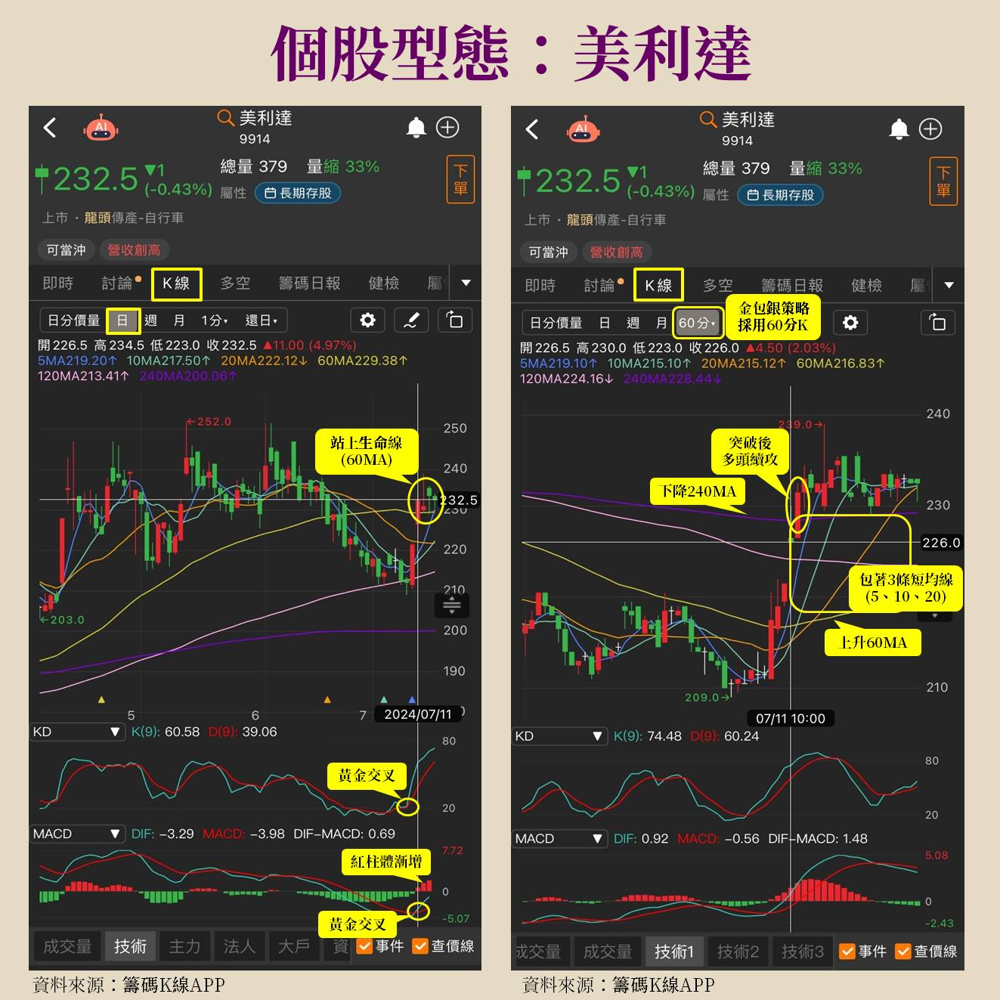

資料來源：《財經鈔能力》20261005 趙慶翔 ft. 莎拉 節目逐字稿 + 網路公開資料（見文末） 整理日期：2026-10-07
「長天期包這個短天期，把 K 棒包在中間，錢就來了，所以叫做金包銀。」
| 名稱 | 均線 | 角色 |
|---|---|---|
| 短均線 | 5MA、10MA、20MA | 被包在中間的「銀」 |
| 生命線 | 60MA（一般稱季線） | 多空分界：跌破＝空方思考、站上＝可能轉多 |
| 半年線 | 120MA | 上方壓力 |
| 年線 | 240MA | 上方壓力 |
CMoney 官方文章的定義：
「需採用 60 分 K 資料頻率來觀察，主要特徵為：上方有下降趨勢壓力線（240MA 或 120MA），下方有正在往上勾的生命線（60MA），中間包著三條短均線（5、10、20MA）。」
節目逐字稿補充的辨識步驟：

圖片來源：CMoney〈第一屆籌碼 K 線投資競賽：Sara Wang 新式型態學實戰教學〉。
────────────────╲______________ ← 120MA / 240MA（下降壓力）
╱╲ ╱╲ ╱╲ ╱ ← 突破進場
K棒 ╱ ╲╱ ╲╱ ╲╱ 5/10/20MA 被包在中間
______________╱──────────────── ← 60MA 生命線（走平上彎）
| 週期 | 用途 |
|---|---|
| 60 分 K | 找金包銀（第一時間卡位） |
| 日 K | 金包銀之後是否走成「正多頭開花」（均線由短到長依序排列並發散，像花盛開） |
| 週 K / 月 K | 判斷位階：股價相對高時「一定要轉到週去看」 |
| 個股 | 節目描述 |
|---|---|
| 群創 | 60 分 K 金包銀 → 日線正多頭開花；週／月線仍在上升通道 |
| 大立光 | 與群創型態相似，60 分金包銀突破後日線正多頭開花 |
| 環球晶 | 漲價題材，有出現金包銀；之後走上升通道，6 月底 7 月初乖離過大後回落 |
| 聯電 | 之前已發生金包銀，目前休息降溫；可轉債＋英特爾合作題材 |
| 南亞科／華邦電 | 同產業型態對比，同時出現金包銀 |
| 先進光 | 進入金包銀後噴一大段 |
| 國巨 | 先日線金包銀上漲，後爆量、跌破 5MA 走 A 型反轉（出場範例） |
| 長榮／陽明 | 航運類股，同樣用金包銀策略；注意除息跳空需看還原日線 |
週期：60 分 K（或日 K 簡化版）
條件 A 前段下跌：60MA 在 N 根前為下彎
條件 B 生命線上彎：MA60[t] > MA60[t-k]（剛轉正斜率）
條件 C 上方壓力：MA120 或 MA240 > 收盤價，且該長均線斜率 < 0
條件 D 被包住：MA60 < MA5, MA10, MA20 < max(MA120, MA240)
條件 E 震盪：K 棒在 [MA60, MA120/240] 區間停留 ≥ M 根
進場 ：MA5 > MA10 > MA20 且收盤突破 MA240（或 MA120）
確認 ：KD / MACD 黃金交叉（選用）
出場 ：收盤跌破 MA60；或高檔爆量黑K後 3–4 根未創高且跌破 MA5
濾網 ：週線位階低（例如收盤距 52 週低點 < X%）、大盤多頭
⚠️ 上述量化參數（N、k、M、X）為整理者自訂，原作者未公開精確數值；「勝率八九成」為作者自述，未經獨立回測驗證。
.txt）